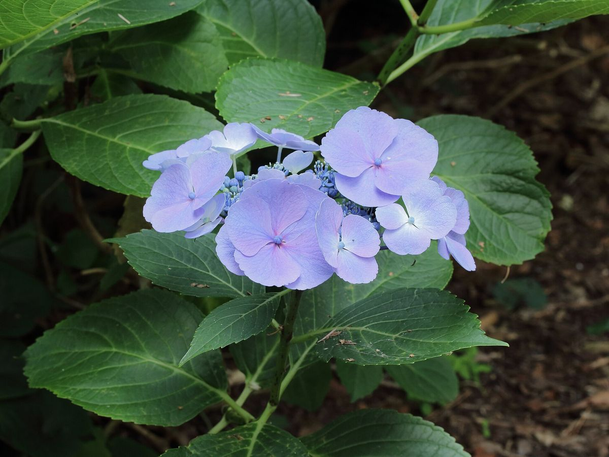
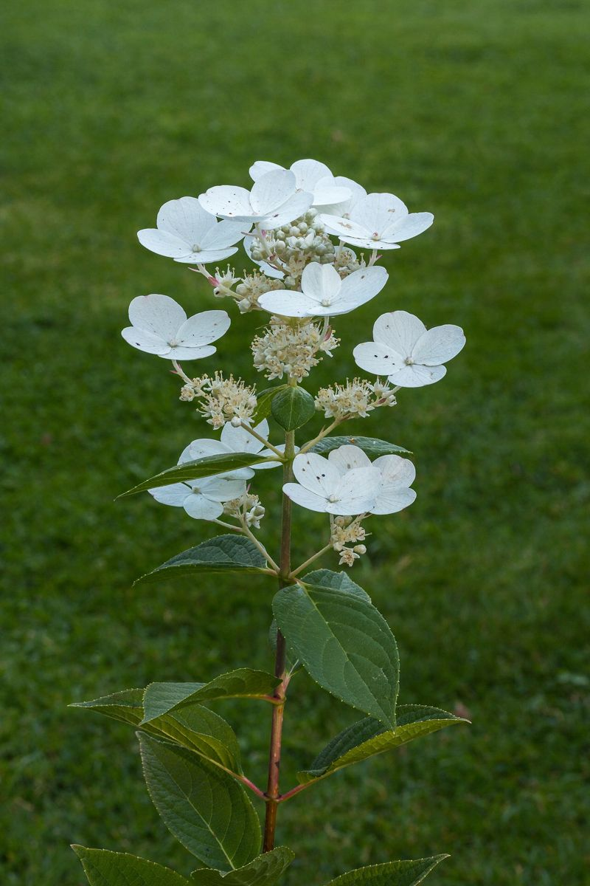
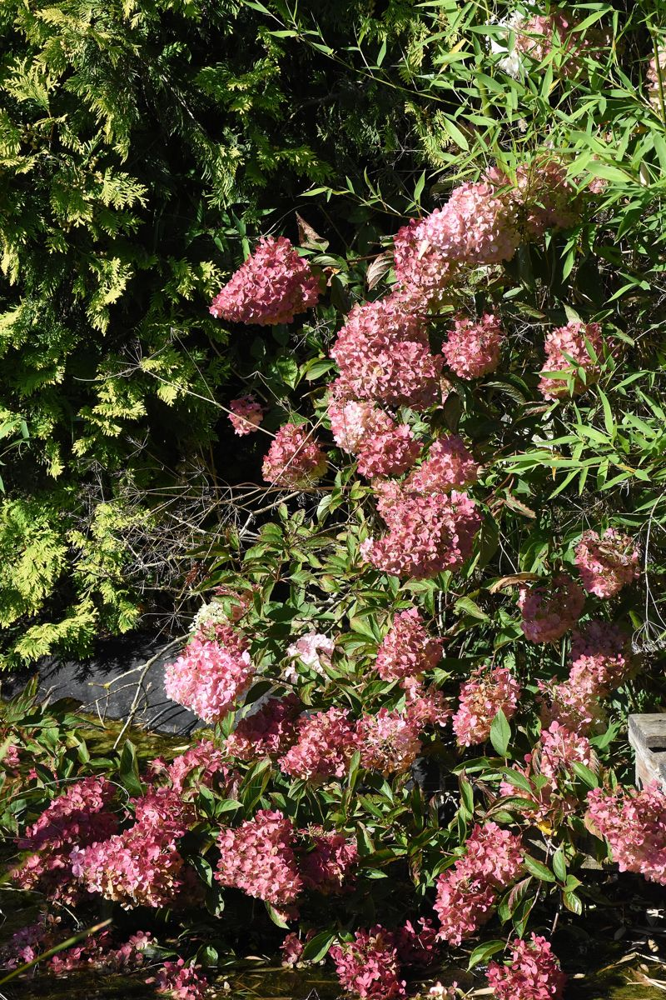

Zahradnická výroba
Hranice
Provoz v Hranicích se věnuje zahradnické a květinářské produkci. Prohlédněte si sortiment hortenzií a spojte se přímo s provozem.

Sezónní nabídka
Rostliny pro zahrady, balkony i další pěstování
Konkrétní odrůdy, velikosti a aktuální dostupnost se během roku mění. Před cestou doporučujeme kontaktovat provoz.
01
Hortenzie
Přehled kolekce a galerie rostlin z Hranic.
Otevřít →02
Balkonové a hrnkové rostliny
Sortiment zahrnuje například begonie, fuchsie, pelargonie a další sezónní rostliny.
03
Doplňkový sortiment
Podle sezóny jsou dostupné také substráty, hnojiva a další zahradnické zboží.




Kontakt
SEMPRA PRAHA – Hranice
| Adresa | Trávnická 9, 753 01 Hranice I-Město |
|---|---|
| Telefon | +420 581 602 095 |
| sempra.hranice@seznam.cz | |
| Provozovatel | SEMPRA PRAHA a. s., IČO 45797439 |
Kontaktní údaje potvrzují aktuální firemní katalogy. Před návštěvou si ověřte sezónní otevírací dobu.
Dotaz na sortiment
Uveďte druh rostliny, požadovaný počet a předpokládaný termín odběru.
Napsat do Hranic →